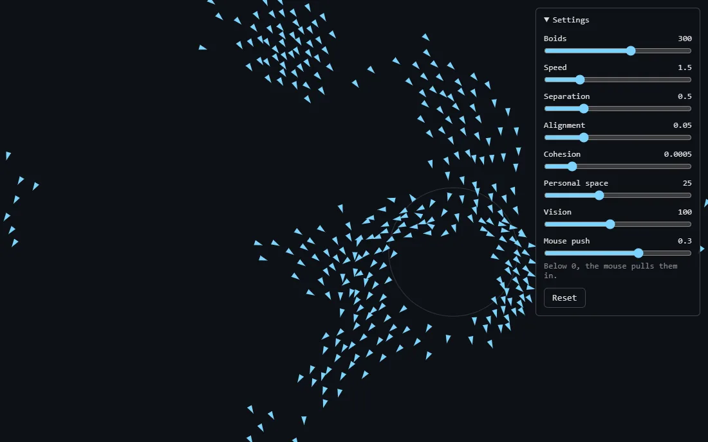

Boids
Three rules make a flock
A few hundred little birds, each following three simple rules about the birds around it. Nobody tells them to flock, but they do. Move your mouse through them, or tweak the rules with the sliders.
In 1986 Craig Reynolds wanted to animate a flock of birds without scripting every single bird. His trick was to not program the flock at all. Program one bird, give it three simple rules about the birds around it, and copy it a few hundred times. The flock shows up on its own. He called them boids, short for "bird-oid objects", and the same idea later flew the bat swarms in Batman Returns.
No rule says "form a flock", "split around the mouse" or "merge back together", yet that's exactly what you see. This is called emergence: complex group behaviour growing out of simple local rules, the same way real starlings and schools of fish move as one without a leader.
Play with the sliders to break it. Turn Cohesion to zero and the groups never pull together. Turn Separation to zero and they pile into tight clumps. Push Alignment up and they march in neat lines.
Under the hood
Each boid only knows three things about itself: its position (x, y), its velocity (which way and how fast it's moving) and a steering nudge that builds up each frame. Every frame, it looks at its neighbours and adds up three nudges:
- Separation Steer away from boids inside your personal space. The closer they are, the harder the push.
- Alignment Turn toward the average direction of the boids you can see.
- Cohesion Drift toward the average position of the boids you can see.
The nudges are added to the velocity, the speed is reset to a fixed value, and the boid moves. Do that for every boid, every frame.